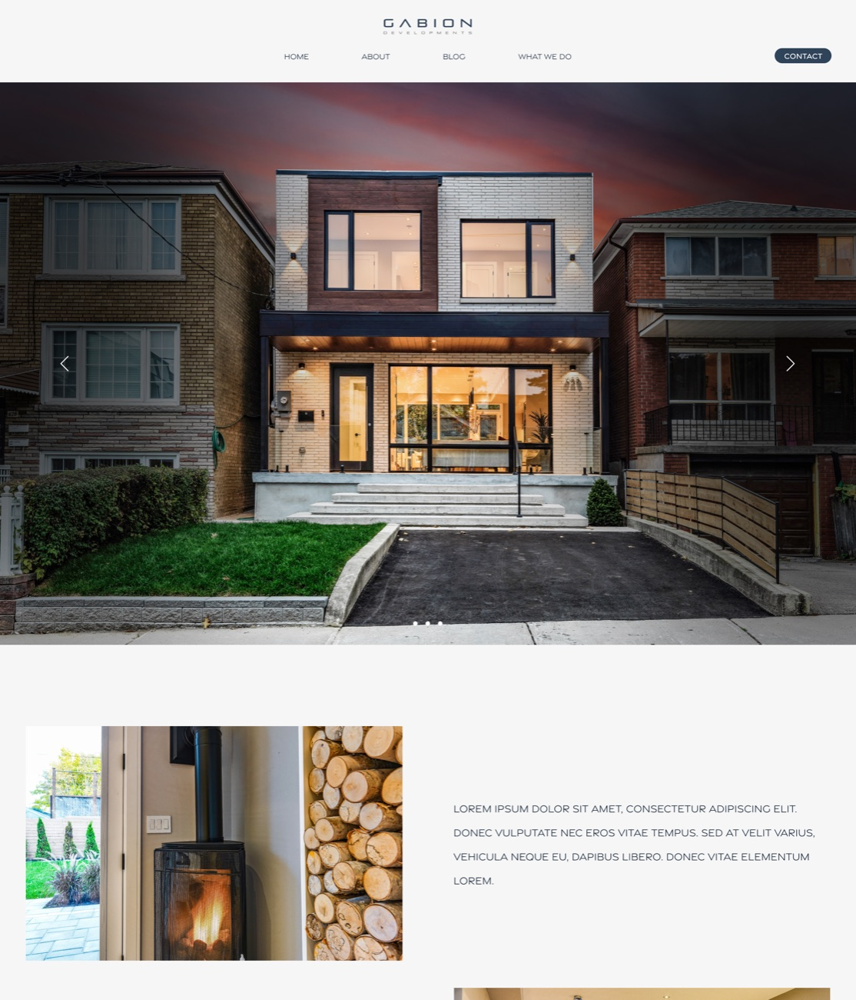
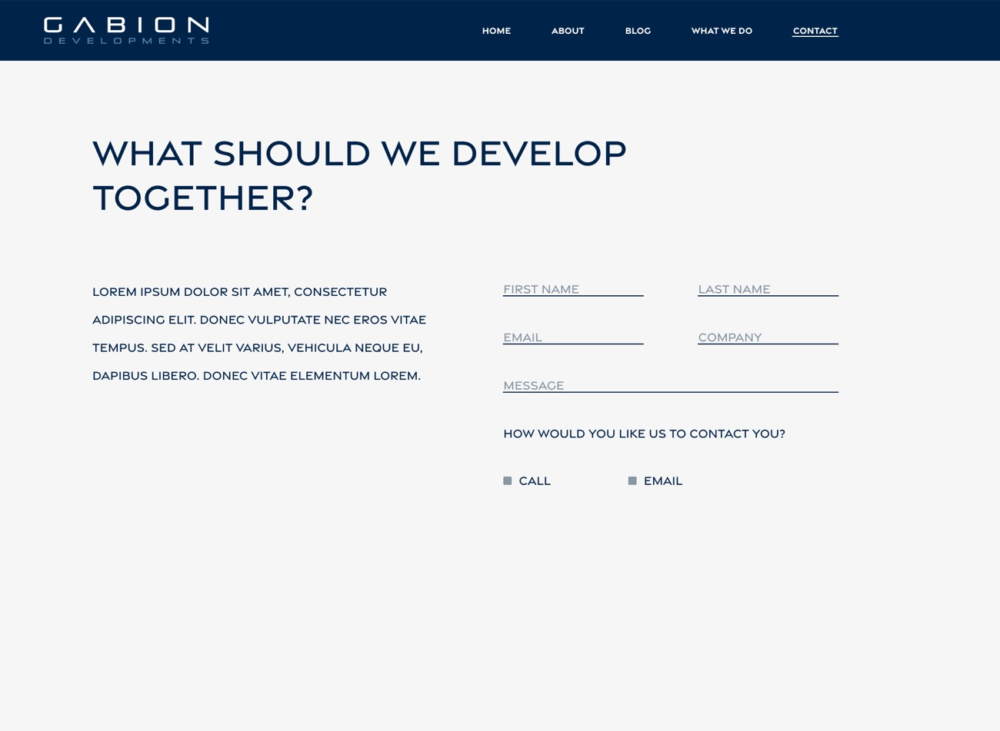
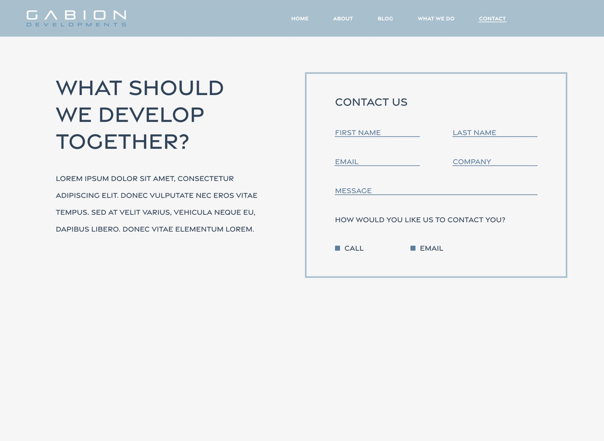

Gabion Developments
A marketing site for a Toronto design-build firm. It puts their finished homes up front and makes booking a call the obvious next step.
Their work, front and centre
A site in the firm's own style that markets its homes and gives people a professional way to reach them.
Designed and built it alone
Structure, visual design and a responsive Webflow build, in two months, with the owners and their marketing lead.
Launched in 2022
The client loved it. It looked like their work, and the homes do the selling.


- ClientGabion Developments, Toronto
- My roleSole designer and site builder
- PlatformWebflow
- Timeline2 months, concept to launch
- Launched2022
- ScopeIA, UX/UI, visual design, responsive build
Gabion needed a site to market its home developments, and to give prospective clients a professional way to find them.
They wanted a site that spoke to their own design style, one that let their work speak first. That's what I led with: a video of a finished home on the homepage, and minimal styling so the photos and video they provided carry the page.
Sell with finished work
People judge a builder by what it has already built, so the site had to put real homes in front of visitors straight away.
Make the process feel manageable
Building or renovating a home is a big, unfamiliar decision. The site needed to show what happens, and in what order, before anyone picks up the phone.
Turn interest into a conversation
One clear next step, repeated across the site: book a call.
Two months, with feedback the whole way through
We started with a kickoff with the owners. After that I worked with their marketing lead on the rest of the site, with the owners checking in along the way. They gave feedback continuously and supplied the content: the photos and videos of their homes.
Structure
Mapped the seven pages and the path from a first visit to Book a Call.
Design
Set the typography, grid and image treatments so the photography leads.
Build
Built responsive pages in Webflow from reusable sections, so the firm's team can edit copy and add projects without a developer.
Launch
Checked every page across screen sizes, then went live.
Early concepts, before the final direction:



A flat structure with seven pages
The only nested level is the individual project pages, so nothing sits more than two clicks from the homepage.
- Home
Video hero, welcome, philosophy, Book a Call banner
- Work With Us
The journey, in four stages
- Projects
Selected work and upcoming projects (below)
- Testimonials
Homeowner quotes; pick a name to read each one
- Blog
Image gallery linking to Instagram
- Careers
Join Our Team, with a link to current openings
- Contact
Enquiry form with a “How did you hear about us?” field
Projects: Selected work
Finished projects, each with its own page.
Projects: Upcoming
Projects in the pipeline, shown as architectural drawings.
Open with a finished home
The homepage opens on a video of a completed project, 111 Malvern Ave, that fills the whole screen. There's very little copy. Before any copy about the company, you see one of their homes. The welcome and philosophy sections come after that.

Let the photography carry the design
I kept the interface simple so the photos could do the work. Every page is built around large images, with plenty of white space and very little else competing for attention. Each project page leads with a photo carousel, keeps the description short, and links to the previous and next project so visitors can keep browsing.

Separate what is built from what is coming
The Projects page splits Selected Work from Upcoming Projects. Finished homes are shown in photographs and each gets its own page. Upcoming ones are shown as architectural drawings, so the difference is clear at a glance. Visitors can see what's finished, and that there's more on the way.

Show the process as four stages
Work With Us walks through Exploring, Imagining, Creating and Finalizing. Each stage explains what Gabion does at that point, such as visualizing design options and submitting the permit while Imagining, or monitoring construction while Creating. The images move from a pencil sketch to a rendering, a framing photo and the finished house, so the page shows the project taking shape.
It shows a new client what happens after they get in touch.

One call to action, repeated
Book a Call is the main way to start. A banner reading “Your Space Defines You” closes almost every page, from the homepage to each project and the contact page, so there's always a way to get in touch close by. The footer below it repeats the email, phone number and address.

Proof from clients, and a blog that runs on Instagram
Testimonials gives homeowners' own words their own page: one quote at a time on desktop, chosen from a row of names, and the full list of quotes stacked on mobile. The Blog is a gallery of image tiles that link out to the firm's Instagram posts, so the team only has to post once and the site stays up to date.


The navigation collapses behind a menu button, paired layouts stack image over text, and grids drop to one column. Components that rely on a wide screen change form: the testimonial selector becomes a simple list of every quote.


Launched in 2022, and the client loved it
It looked like their work, which was the whole point. I handed it over after launch and don't maintain it now.
Visit gabiondevelopments.com ↗